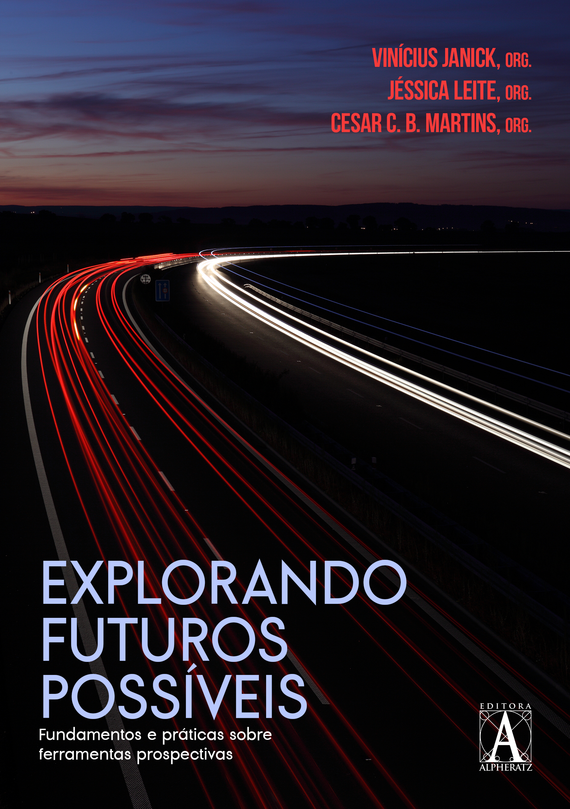

Início
VJ Futuros — Ensino, pesquisa e Consultoria em estudos prospectivos
Modelagem de Cenários e
Estudos Prospectivos.
Concebida e desenvolvida pelo Prof. Dr. Vinicius Janick, essa plataforma está em constante aprimoramento com o propósito de ser um hub de pesquisa prospectiva e ambiente para disseminação de conhecimento com rigor científico sobre teoria e prática de Foresight para pesquisadores, praticantes e entusiastas.
SCIC Web
Impactos CruzadosSimulador interativo para cálculo de probabilidades futuras e interdependência de variáveis em cenários prospectivos.
Acessar SCIC Web →COSFD
IA para SementesInteligência Artificial para auxílio de elaboração de Sementes de Futuro para o Informativo SFD do LSC/EGN.
Acessar COSFD →smplDEA
Análise Envoltória (DEA)Plataforma voltada para medição de eficiência, benchmarking comparativo e otimização de recursos e organizações.
Acessar smplDEA →Publicações & Análises Recentes
Obras & Livros

Manual para Redação e Classificação de Sementes de Futuro
Critérios objetivos para busca, redação e classificação de sementes de futuro na pesquisa prospectiva.
Download →
Explorando Futuros Possíveis
Fundamentos e práticas essenciais sobre o uso de ferramentas conceituais em cenários de foresight.
Download →Últimas do Blog
Sobre mim
Linhas de pesquisa, atuação acadêmica e publicações do Prof. Dr. Vinicius Janick
Ensino, Pesquisa e Consultoria em Estudos Prospectivos
Doutor em Administração pela USP com foco em Estudos Prospectivos e planejamento estratégico em defesa. Atuação como professor, pesquisador e consultor.
Minha pesquisa concentra-se na modelagem de cenários prospectivos e no estudo e desenvolvimento de métodos quantitativos e qualitativos aplicados ao planejamento prospectivo, principalmente na área de Defesa Nacional, Forças Armadas e Segurança Internacional.
Pesquisador no Laboratório de Simulações e Cenários (LSC/EGN) e no Grupo de Estudos em Eficiência (GREFIC/FEA-RP).


Publicações em Destaque
Análises & Blog
Reflexões e análises técnicas sobre planejamento de defesa e estudos prospectivos
Projetos & Ferramentas
Aplicações online e simuladores conceituais em desenvolvimento
Plataformas & Ferramentas Analíticas
SCIC Web
Impactos CruzadosSimulador interativo para cálculo de probabilidades futuras e interdependência de variáveis em cenários prospectivos.
Acessar SCIC Web →COSFD
IA para SementesInteligência Artificial para auxílio de elaboração de Sementes de Futuro para o Informativo SFD do LSC/EGN.
Acessar COSFD →smplDEA
Análise Envoltória (DEA)Plataforma voltada para medição de eficiência, benchmarking comparativo e otimização de recursos e organizações.
Acessar smplDEA →Simulador Interativo de Impactos Cruzados
Este exemplo ilustra o conceito da técnica de Impactos Cruzados, simulando como o investimento e a cooperação internacional alteram a probabilidade de três cenários futuros hipotéticos.